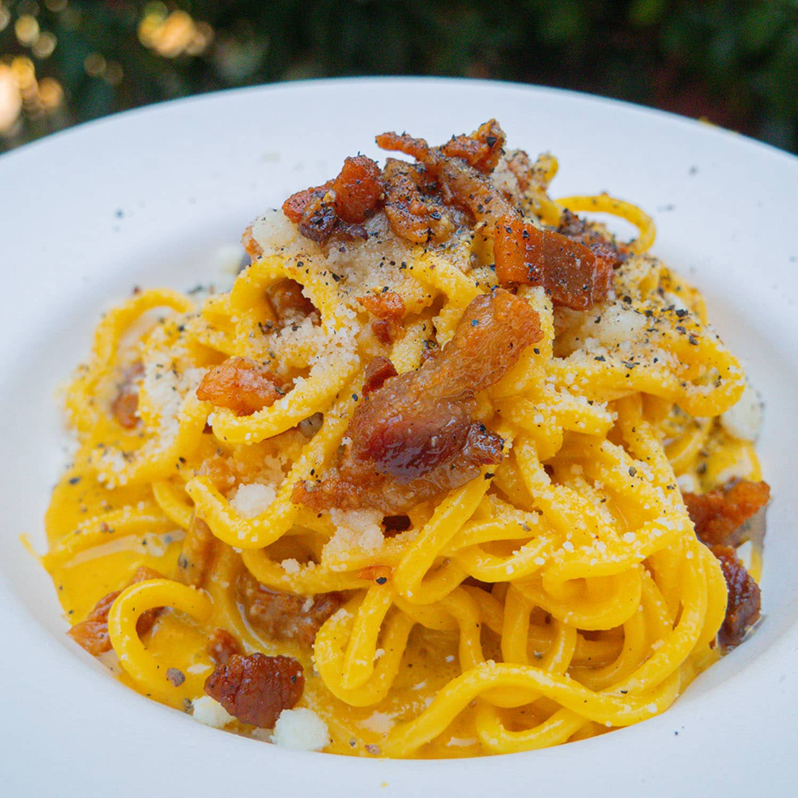

CARBONARA

Authentic Carbonara Like A Roman
An authentic carbonara is made with egg yolks, pecorino romano, guanciale, black pepper and pasta.
This recipe is the traditional one you will find in any Roman restaurant.
Ingredients:
- pasta
- eggs
- pecorino romano
- black pepper
- guanciale
Instructions:
- Bring a pot of water to boil. When it is boiling, add salt. Throw the pasta in and cook until it is just before al dente.
- When the water is about to boil, add the guanciale to a cold pan.
- Turn the heat up to medium and let the guanciale cook until it is crispy and the fat has rendered, about 10-15 minutes.
- Remove the guanciale from the pan, and leave the fat in.
- If pasta is not ready by this time, remove the pan from the heat until pasta is done cooking.
- While guanciale is cooking, make the carbonara cream in a small bowl, beat together egg yolks, pecorino romano, 2 spoons of guanciale fat, a little bit of pasta water and ground black pepper.
- Add the pasta to the pan, and add about half of a ladle of pasta water to the pan as well.
- Be careful when adding the pasta to the pan because the guanciale fat will splatter
- Let the pasta cook in the pan for a few minutes, until it is al dente.
- Add more pasta water if needed. You want there to be a bit of starchy liquid left at the bottom of the pan, and not have it be completely dry.
- Remove the pan from the heat. Add the carbonara egg cream and mix.
- Add the guanciale and mix again.
- Plate and top with additional ground black pepper and pecorino romano.